rolling_regress
Estimates coefficients of rolling least-squares regressions.
Contents
Syntax
alpha = rolling_regress(Y,X)
[alpha beta] = rolling_regress(Y,X)
[...] = rolling_regress(Y,X,kernel)
[...] = rolling_regress(Y,X,kernel,bandwidth)Description
alpha = rolling_regress(Y,X) gives the intercepts of rolling weighted least-squares regressions of the columns of Y on X using weights given by kernel. X is a matrix of observations of 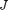 independent variables. Y is a matrix of observations of 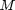 dependent variables. alpha is a matrix of intercepts. Note: X should not include a column of ones.
[alpha beta] = rolling_regress(Y,X) also returns the a matrix of regression coefficients.
[...] = rolling_regress(Y,X,kernel) specifies the kernel. If not specified, the default is 'gaussian'. Other options are 'one-sided-uniform', 'one-sided exponential' or a used-supplied function handle (the kernel must integrate to one).
[...] = rolling_regress(Y,X,kernel,bandwidth) specifies the kernel's bandwidth. If bandwidth is a number, the same bandwidth is used for all columns of Y. If bandwidth is a vector, then the 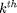 element of the vector is used for the column of Y. If not specified, the optimal bandwidth is used for each column (see below for a precise description).
The estimates of alpha and beta corresponding to the column of Y at time 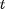 are given by:
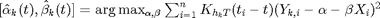
where 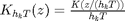 is the weighting function and 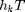 the bandwidth. The possible kernels are:
'gaussian' 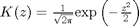
'one-sided-uniform' 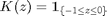
'one-sided exponential' 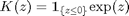
If the kernel is a user-defined function handle, it must satisfy 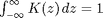 References: [1] Ang, A. and Kristensen, D. (2011) Testing Conditional Factor Models
Copyright 2011 Fernando M. Duarte